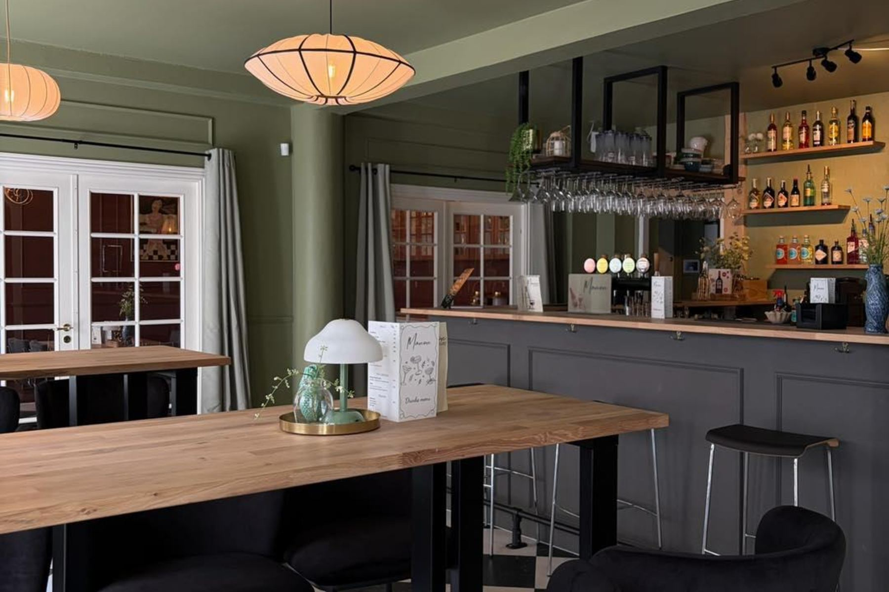
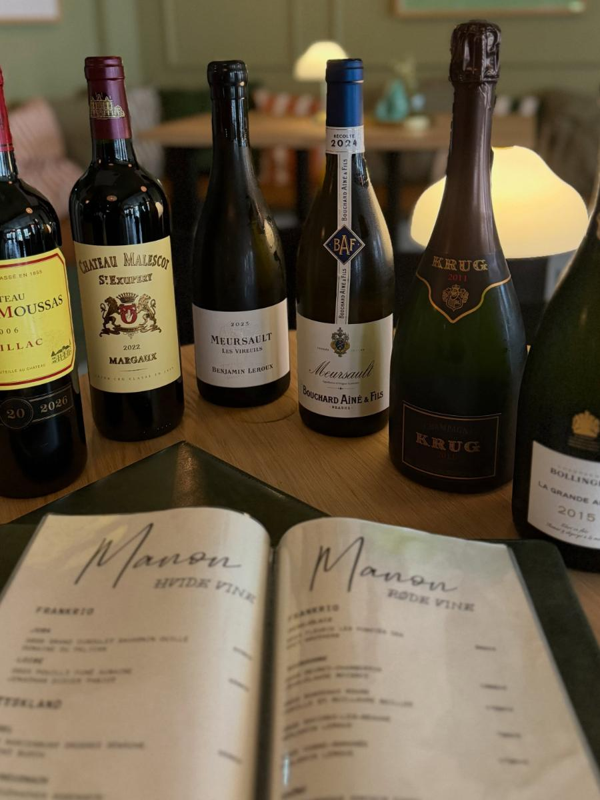
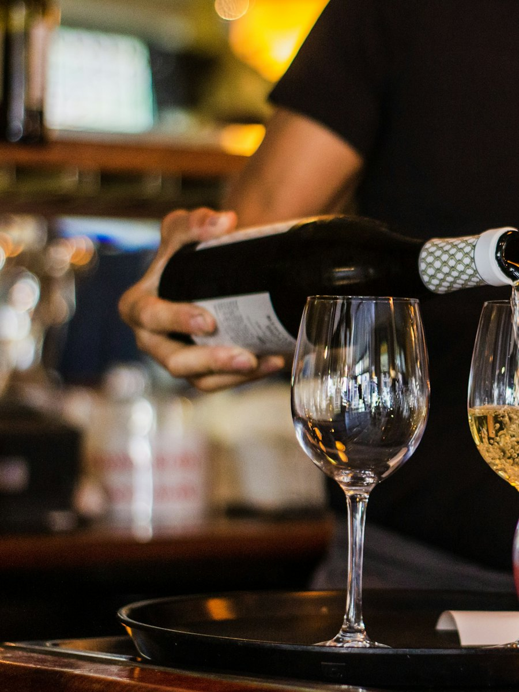
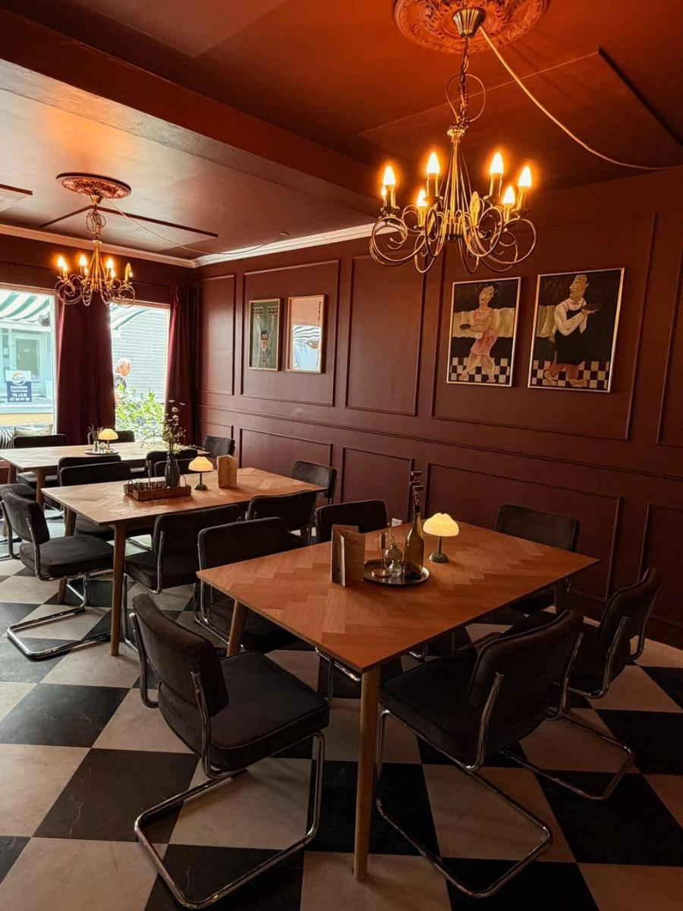
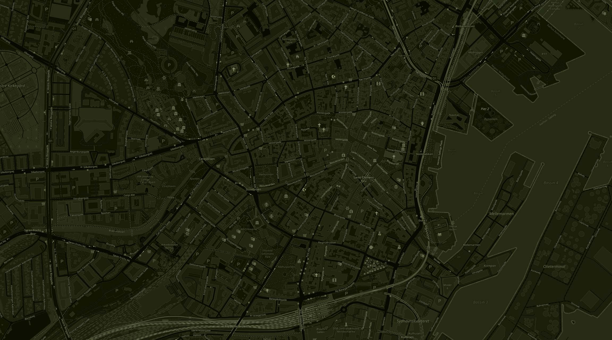

Åbningstider
Onsdag 14–23, torsdag 14–24
Fredag 14–02, lørdag 12–02
Bord
Kom bare forbi. Er I mange, så ring på 31 44 61 20 eller skriv til booking@manonaarhus.dk.
Adresse
Frederiksgade 44, 8000 Aarhus C
Se kort
Denne måned
Månedens vin
Hver måned vælger vi én flaske, vi selv drikker for tiden, og sætter den til 300 kr. Spørg, hvad det er i denne måned.
300 kr. flasken
Årstidens drink
Manon Spritz: Lillet Rosé, rabarber, cava og danskvand. Skifter, når årstiden gør.
85 kr.



Kortet
Vin fra Frankrig, Italien og Spanien, cocktails med sydlandsk inspiration, og noget godt til dem, der ikke drikker. Hele kortet står i baren.
- Cocktails, fx Manon Negroni, gin og vermouth med tonic85 kr.
- Vin på glas, rød, hvid og roséSpørg
- Bobler og champagneSpørg
- Kælderkortet, til en særlig aftenSpørg
- FadølSpørg
- Fransk lemonade, cider, mocktails og alkoholfri ølSpørg
Priserne er vejledende.
Den bar, vi selv savnede
Manon er åbnet af fire venner, der ville lave det sted, de selv manglede i Aarhus: en bar, hvor man kan sidde længe, tale sammen uden at råbe og blive taget godt imod hele aftenen.
Navnet er fransk, musikken er jazz og swing, skruet ned, og kortet har både noget til en onsdag og en flaske til en aften, der skal fejres.

© OpenStreetMapFind os
Frederiksgade 44
8000 Aarhus C
| Mandag og tirsdag | Lukket |
| Onsdag | 14–23 |
| Torsdag | 14–24 |
| Fredag | 14–02 |
| Lørdag | 12–02 |
| Søndag | Lukket |